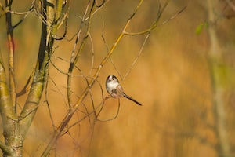
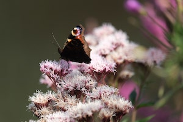
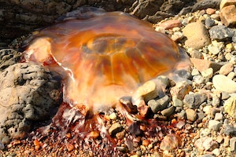
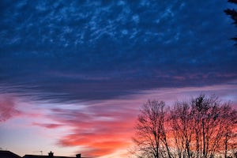

This all started during the first lockdown when I bought my first professional digital camera
It got boring taking the same old shots of local birds on the garden feeder, so I went exploring
Visiting Royal Parks was something I really looked forward to. It was then that I developed an interest in butterflies
As lockdown eased, I went to the beach. Here, I developed an interest in textures and unusual marine life
During the summer months when lockdown really eased, I went to visit local public gardens. Poppy fields became a favourite
Winter arrived and we were back in Lockdown. It didnt stop me from finding wonderful things to take photos off